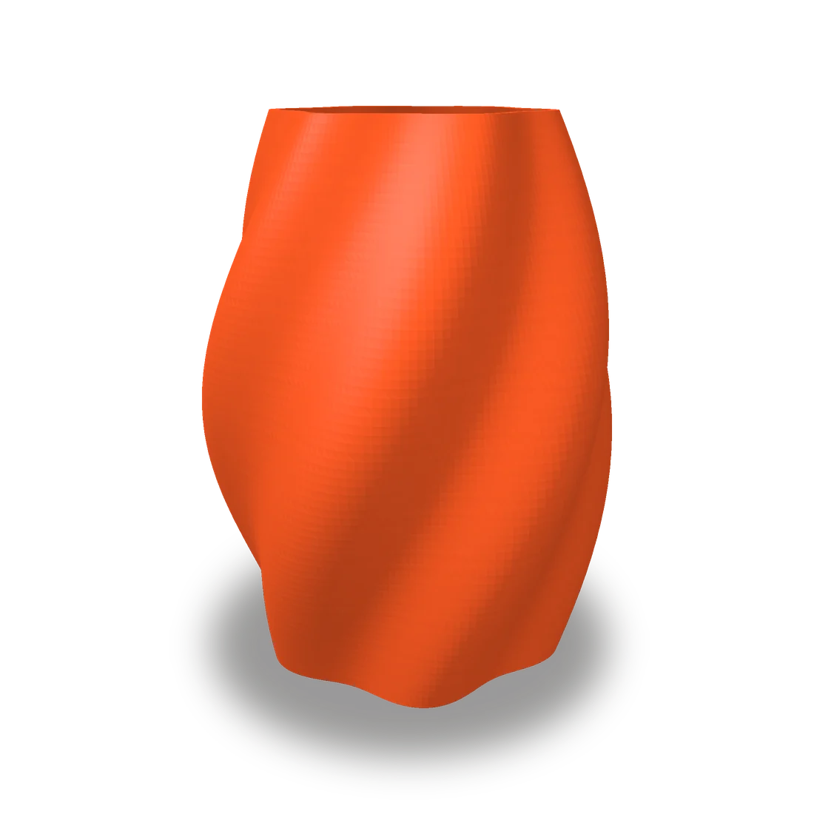

Vaso torsione
da 29,00 €
Vaso con pareti a torsione che giocano con la luce.
Colore: Arancione, Nero opaco, Grigio titanio, Bianco
Altezza: 12 cm, 18 cm
Descrizione
Un vaso dalle linee morbide che sembra ruotare su sé stesso: le pareti a torsione creano giochi di luce e ombra che cambiano durante il giorno. È perfetto per fiori secchi, piante grasse, pennelli o come oggetto decorativo su una mensola, una libreria o la scrivania.
La stampa 3D a strati lascia sulla superficie una texture sottile e regolare, che rende ogni vaso un pezzo dal carattere artigianale. Puoi sceglierlo in tre colori e in due altezze, 12 o 18 cm.
Per fiori freschi con acqua ti consigliamo di inserire all'interno un piccolo contenitore in vetro. Vuoi un'altezza o un colore diverso? Scrivilo nel campo note e ti mandiamo un preventivo.
Caratteristiche
- Tecnologia
- Stampa 3D FDM
- Altezza
- 12 o 18 cm